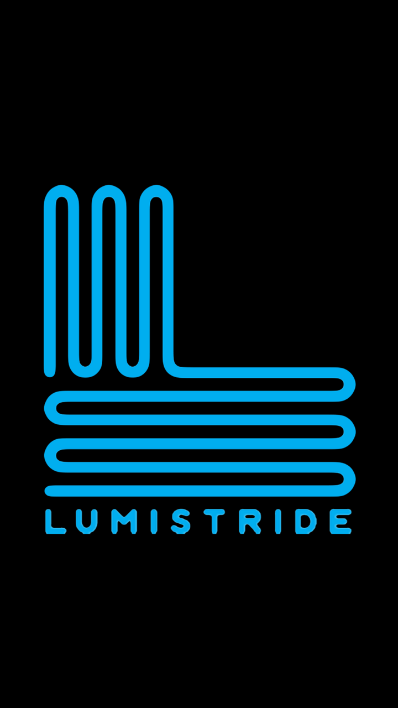

这是一个简单的弹窗
我是不可取消的按钮 (data-dismissible="false)。唯一关闭这个弹窗的方式是通过点击右上角的关闭按钮。你无法通过点击弹窗之外的区域关闭弹窗。
默认情况下，弹窗会直接显示在点击元素的上方，如果需要控制弹窗的位置，可以在用于打开弹窗的点击链接上使用 data-position-to 属性
弹窗窗口显示 弹窗显示在 id="demo" 元素上 默认显示我显示在窗口的中间部分。
我显示在 id="demo" 的元素上。
我显示在点击的按钮上。
这是一个段落。
这是另外一个段落。
这还是一个段落。
这是一个段落。这个段落包含了子元素：这是一个插入在段落中 id="demo" 的 span 元素 。
以下演示了弹窗所有过渡效果的实例。
注意： 从性能方面上考虑， jQuery Mobile 推荐使用 "pop", "fade" 或 "none" 过渡效果。
淡入 翻转 抛出当前页后显示 弹出 向左滑动 向左滑动并淡入 向上滑动 up 向下滑动 转向 无过渡效果。这是一个简单的弹窗。
如果需要添加弹窗方向小边框，可以使用 data-arrow 属性，并指定值 "l" (左边), "t" (顶部), "r" (右边) or "b" (底部)
点击按钮打开一个带方向边框的弹窗。
左边 顶部 右边 底部在左边框有个方向。
在顶部边框有个方向。
在右边框有个方向。
在底部边框有个方向。
这是一个段落，用于实例展示。弹窗显示在 这里。
可以将弹窗制作为一个标准的对话框 (头部, 内容和底部标记)
打开对话框弹窗点击图片放大它。
注意我们在右上角添加了 "返回按钮"。
这是我的图片！
Close在我身后有个深色背景。
点击图片放大它。
注意我们在右上角添加了 "返回按钮"。
这是我的图片！
Close